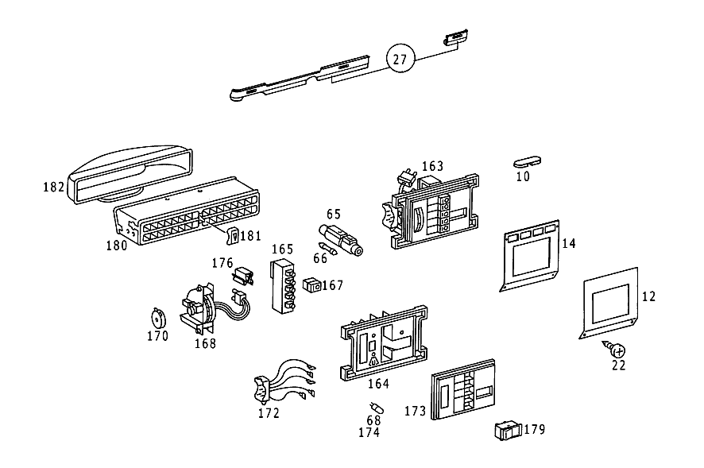

| № | Артикул | Название | Кол. | Примечание | Ограничение |
|---|---|---|---|---|---|
| 10 | A 116 683 15 36 | ПАНЕЛЬ | 1 | LEFT COVERING,для AIR OUTLET HOLE IN REAR END PILLAR,TOP Z 56.139/01, Z 56.139/02, Z 56.139/03, Z 56.139/05 | |
| 10 | A 116 683 16 36 | ПАНЕЛЬ | 1 | RIGHT COVERING,для AIR OUTLET HOLE IN REAR END PILLAR,TOP Z 56.139/01, Z 56.139/02, Z 56.139/03, Z 56.139/05 | |
| 14 | A 116 680 25 09 | ПАНЕЛЬ | 1 | ПАНЕЛЬ УПРАВЛ. Z 56.139/01, Z 56.139/03, Z 56.139/05 [002] ZEBRANO,CAUCASIAN WALNUT SHADE,VENEER NO.8273,CODES 001-006;101-106;201-206;301-306;401-406;901-906 | |
| 22 | N 914032 004300 | Винт с неспадающей шайбой | 4 | Z 56.139/01, Z 56.139/02, Z 56.139/03, Z 56.139/05 | |
| 27 | A 116 680 69 83 | Обшивка | 1 | СИСТЕМА АВТОМАТИЧЕСКОГО КЛИМАТ\-КОНТРОЛЯ Рулевое управление: Влево Z 56.139/01, Z 56.139/03, Z 56.139/05 [002] ZEBRANO,CAUCASIAN WALNUT SHADE,VENEER NO.8273,CODES 001-006;101-106;201-206;301-306;401-406;901-906 | |
| 30 | A 116 800 15 83 | ПРОВОД | 1 | ВАКУУМ Z 56.139/01, Z 56.139/02, Z 56.139/03, Z 56.139/05 | |
| 34 | A 123 800 05 78 | - КЛАПАН | 3 | Z 56.139/01, Z 56.139/02, Z 56.139/03, Z 56.139/05 | |
| 37 | A 117 078 01 45 | - Штуцер ответвления | 6 | ТРОЙНИК Z 56.139/01, Z 56.139/02, Z 56.139/03, Z 56.139/05 [013] FROM CHASSIS: 116.020 107040 116.024,025 122383 116.028,029 048204 116.032,033 084231 116.036 004749 | |
| 38 | A 007 997 61 82 | - Шланг | NB | 50mm; 9X2.75 MM Z 56.139/01, Z 56.139/02, Z 56.139/03, Z 56.139/05 [404] ЗАКАЗЫВАТЬ ПОГОННЫМИ МЕТРАМИ | |
| 40 | A 117 078 00 45 | - Штуцер ответвления | 4 | Y\-ОБРАЗН. ФОРМА Z 56.139/01, Z 56.139/02, Z 56.139/03, Z 56.139/05 | |
| 40 | A 117 078 00 45 | - Штуцер ответвления | 1 | Z 56.139/01, Z 56.139/02, Z 56.139/03, Z 56.139/05 [013] FROM CHASSIS: 116.020 107040 116.024,025 122383 116.028,029 048204 116.032,033 084231 116.036 004749 | |
| 43 | A 116 988 25 78 | СКОБА | 1 | Z 56.139/01, Z 56.139/02, Z 56.139/03, Z 56.139/05 [402] БОЛЬШЕ НЕ ПОСТАВЛЯЕТСЯ | |
| 46 | N 007976 004207 | Винт | 2 | Z 56.139/01, Z 56.139/02, Z 56.139/03, Z 56.139/05 | |
| 48 | N 007981 004254 | Шуруп | 1 | 4.2X19 Z 56.139/01, Z 56.139/02, Z 56.139/03, Z 56.139/05 | |
| 50 | A 094 990 63 08 | Шайба | 1 | Z 56.139/01, Z 56.139/02, Z 56.139/03, Z 56.139/05 | |
| 53 | A 001 997 41 90 | Кабельная стяжка | 1 | 7X100 MM Z 56.139/01, Z 56.139/02, Z 56.139/05 | |
| 53 | A 116 997 08 90 | Кабельная стяжка | 1 | 7X140 MM Z 56.139/01, Z 56.139/02, Z 56.139/03, Z 56.139/05 | |
| 53 | A 001 997 43 90 | Кабельная стяжка | 1 | 140mm; 9X250 MM Z 56.139/01, Z 56.139/02, Z 56.139/03, Z 56.139/05 | |
| 53 | A 114 997 05 90 | связующее вещество | 1 | 160 MM; 9X210 MM Z 56.139/01, Z 56.139/02, Z 56.139/03, Z 56.139/05 | |
| 57 | N 916002 008100 | Хомут | 1 | Z 56.139/01, Z 56.139/02, Z 56.139/03, Z 56.139/05 | |
| 61 | A 000 997 07 52 | ШЛАНГ | - | Z 56.139/01, Z 56.139/02, Z 56.139/03, Z 56.139/05 | |
| 61 | A 000 997 65 52 | Шланг | 1 | BETWEEN SUPPLY TANK DISTRIBUTOR AND COUPLING с HOSE CONNECTION 1150 MM Z 56.139/01, Z 56.139/02, Z 56.139/03, Z 56.139/05 [404] ЗАКАЗЫВАТЬ ПОГОННЫМИ МЕТРАМИ | |
| 64 | A 007 997 61 82 | Шланг | 1 | FROM VACUUM ELEMENT TO CONNECTOR 200mm; 9X2.75 MM Z 56.139/01, Z 56.139/02, Z 56.139/03, Z 56.139/05 [404] ЗАКАЗЫВАТЬ ПОГОННЫМИ МЕТРАМИ | |
| 64 | A 007 997 61 82 | Шланг | 1 | К РАСПРЕДЕЛИТЕЛЮ 40 MM; 9X2.75 MM Z 56.139/01, Z 56.139/02, Z 56.139/03, Z 56.139/05 [404] ЗАКАЗЫВАТЬ ПОГОННЫМИ МЕТРАМИ | |
| 64 | A 008 997 38 82 | Шланг | 1 | 50mm Z 56.139/01, Z 56.139/02, Z 56.139/03, Z 56.139/05 [404] ЗАКАЗЫВАТЬ ПОГОННЫМИ МЕТРАМИ | |
| 65 | A 000 827 00 37 | БЛОК ПРЕДОХРАНИТЕЛЕЙ | 1 | Z 56.139/01, Z 56.139/02, Z 56.139/03, Z 56.139/05 | |
| 66 | A 001 545 01 34 | ПРЕДОХРАНИТЕЛЬ | 1 | Z 56.139/01, Z 56.139/02, Z 56.139/03, Z 56.139/05 | |
| 68 | N 072601 012230 | - Лампа накаливания | 2 | УСТАНОВКА УПРАВЛЕНИЯ W5/1,2\-12V 1,2W; 12V\-1.2W Z 56.139/01, Z 56.139/02, Z 56.139/03, Z 56.139/05 | |
| 68 | N 072601 012230 | Лампа накаливания | 1 | РЕЛЕ ТЕМПЕРАТУРЫ W5/1,2\-12V 1,2W; 12V\-1.2W Z 56.139/01, Z 56.139/02, Z 56.139/03, Z 56.139/05 | |
| 68 | N 072601 012230 | Лампа накаливания | 2 | УСТАНОВКА УПРАВЛЕНИЯ W5/1,2\-12V 1,2W; 12V\-1.2W Z 56.139/01, Z 56.139/02, Z 56.139/03, Z 56.139/05 | |
| 73 | A 116 830 37 62 | КОЖУХ СИСТЕМЫ ОТОПЛЕНИЯ | 1 | Z 56.139/01, Z 56.139/02, Z 56.139/03, Z 56.139/05 | |
| 74 | A 000 830 48 58 | - Испаритель | 1 | Z 56.139/01, Z 56.139/03, Z 56.139/05 | |
| 75 | A 115 835 00 72 | - КЛАПАН | 1 | Z 56.139/01, Z 56.139/03, Z 56.139/05 | |
| 76 | A 108 835 02 47 | - Сетка | 1 | Z 56.139/01, Z 56.139/03, Z 56.139/05 | |
| 77 | A 116 835 01 01 | - Теплообм. | 1 | Z 56.139/01, Z 56.139/02, Z 56.139/03, Z 56.139/05 | |
| 79 | A 116 830 01 25 | - ШТУЦЕР | 1 | Z 56.139/01, Z 56.139/02, Z 56.139/03, Z 56.139/05 | |
| 81 | A 116 831 07 88 | - Соединение | 1 | Рулевое управление: Влево Z 56.139/01, Z 56.139/02, Z 56.139/03, Z 56.139/05 | |
| 82 | A 003 820 24 10 | - Температурный выключатель | 1 | ТЕМПЕРАТУРА Z 56.139/01, Z 56.139/02, Z 56.139/03, Z 56.139/05 [409] ПРИ МОНТАЖЕ ПОДОГНАТЬ ПО МЕСТУ | |
| 84 | A 116 821 00 76 | - ШУМОИЗОЛЯЦИЯ | 1 | РЕЛЕ ТЕМПЕРАТУРЫ Z 56.139/01, Z 56.139/02, Z 56.139/03, Z 56.139/05 [402] БОЛЬШЕ НЕ ПОСТАВЛЯЕТСЯ | |
| 86 | N 007981 003214 | - Шуруп | 2 | B3,9X9,5 Z 56.139/01, Z 56.139/02, Z 56.139/03, Z 56.139/05 | |
| 88 | A 000 987 13 41 | - КОЛЬЦО РЕЗИНОВОЕ | 2 | Z 56.139/01, Z 56.139/02, Z 56.139/03, Z 56.139/05 | |
| 90 | A 000 800 22 75 | - Исполнительный элемент | 2 | Z 56.139/01, Z 56.139/02, Z 56.139/03, Z 56.139/05 [014] UP TO CHASSIS: 116.020 105375 116.024,025 119772 116.028,029 047585 116.032,033 083190 116.036 004589 | |
| 90 | A 116 800 21 75 | - Исполнительный элемент | 2 | Z 56.139/01, Z 56.139/02, Z 56.139/03, Z 56.139/05 [015] FROM CHASSIS: 116.020 105376 116.024,025 119773 116.028,029 047586 116.032,033 083191 116.036 004590 | |
| 91 | A 116 987 05 41 | - Эластомерная шайба | 3 | Z 56.139/01, Z 56.139/02, Z 56.139/03, Z 56.139/05 | |
| 93 | A 000 994 96 45 | - предохранитель | 3 | Z 56.139/01, Z 56.139/02, Z 56.139/03, Z 56.139/05 | |
| 94 | A 000 990 26 92 | - Распорная заклепка | 3 | Z 56.139/01, Z 56.139/02, Z 56.139/03, Z 56.139/05 | |
| 97 | A 116 835 01 96 | - ПОДКЛАДКА | 1 | ВАКУУМ.ЭЛЕМЕНТ.НА КЛИМАТ.КОРОБЕ Z 56.139/01, Z 56.139/02, Z 56.139/03, Z 56.139/05 | |
| 98 | A 000 994 96 45 | - предохранитель | 3 | ВАКУУМ.ЭЛЕМЕНТ.НА КЛИМАТ.КОРОБЕ Z 56.139/01, Z 56.139/02, Z 56.139/03, Z 56.139/05 | |
| 110 | A 116 830 09 45 | - КАНАЛ ВОЗДУШНЫЙ | 1 | UNDER HEATER CASE Рулевое управление: Влево Z 56.139/01, Z 56.139/02, Z 56.139/03, Z 56.139/05 | |
| 114 | A 116 800 19 75 | - Исполнительный элемент | 1 | Z 56.139/01, Z 56.139/02, Z 56.139/03, Z 56.139/05 | |
| 116 | A 460 990 01 97 | - Заклепка | 2 | Z 56.139/01, Z 56.139/02, Z 56.139/03, Z 56.139/05 | |
| 120 | A 000 994 96 45 | - предохранитель | 1 | VACUUM ELEMENT TO LEGROOM FLAP Z 56.139/01, Z 56.139/02, Z 56.139/03, Z 56.139/05 | |
| 122 | A 107 831 01 34 | - Пружина | 2 | ВОЗДУШНЫЙ КАНАЛ НА КОРОБЕ ОТОПЛЕНИЯ Z 56.139/01, Z 56.139/02, Z 56.139/03, Z 56.139/05 | |
| 125 | A 116 831 00 34 | - Пружина | 2 | ВОЗДУШНЫЙ КАНАЛ НА КОРОБЕ ОТОПЛЕНИЯ Z 56.139/01, Z 56.139/02, Z 56.139/03, Z 56.139/05 | |
| 126 | A 116 835 14 14 | - ДЕРЖАТЕЛЬ | 1 | для ELECTRIC CHANGE\-OVER VALVE AND VACUUM SOLENOID SWITCH Z 56.139/01, Z 56.139/02, Z 56.139/03, Z 56.139/05 | |
| 127 | N 304017 006034 | - Винт с 6-гранной головкой | 1 | Z 56.139/01, Z 56.139/02, Z 56.139/03, Z 56.139/05 | |
| 128 | N 000137 006204 | - Пружинная шайба | 1 | Z 56.139/01, Z 56.139/02, Z 56.139/03, Z 56.139/05 | |
| 129 | A 000 800 06 73 | - Переключатель | 1 | ЦВЕТ ЗЕЛЕН. Z 56.139/01, Z 56.139/02, Z 56.139/03, Z 56.139/05 | |
| 131 | A 000 800 05 73 | - Переключатель | 1 | COLOR,YELLOW Z 56.139/01, Z 56.139/02, Z 56.139/03, Z 56.139/05 | |
| 133 | A 000 994 89 45 | - Стопор болта | 2 | VACUUM/SOLENOID SWITCH TO BRACKET; 8 MM Z 56.139/01, Z 56.139/02, Z 56.139/03, Z 56.139/05 | |
| 135 | A 123 987 04 41 | - Диск | 2 | VACUUM/SOLENOID SWITCH TO BRACKET Z 56.139/01, Z 56.139/02, Z 56.139/03, Z 56.139/05 | |
| 139 | A 001 540 86 97 | - Электромагнитный клапан | 1 | НА ДЕРЖАТ КЛИМ.КОРОБА Z 56.139/01, Z 56.139/02, Z 56.139/03, Z 56.139/05 | |
| 139 | A 001 540 86 97 | - Электромагнитный клапан | 2 | НА ДЕРЖАТ КЛИМ.КОРОБА Z 56.139/01, Z 56.139/02, Z 56.139/03, Z 56.139/05 | |
| 141 | N 007985 005125 | - Винт | 4 | Z 56.139/01, Z 56.139/02, Z 56.139/03, Z 56.139/05 | |
| 143 | N 000137 005203 | - Пружинная шайба | 4 | Z 56.139/01, Z 56.139/02, Z 56.139/03, Z 56.139/05 | |
| 144 | A 116 830 00 14 | Держатель | 1 | НАСОС ОЖ Z 56.139/01, Z 56.139/03, Z 56.139/05 | |
| 146 | A 000 830 03 84 | Клапан | 1 | АВТОМАТИЧЕСКИ Z 56.139/01, Z 56.139/02, Z 56.139/03, Z 56.139/05 | |
| 147 | A 000 830 01 98 | - РЕМКОМПЛЕКТ | 1 | Z 56.139/01, Z 56.139/02, Z 56.139/03, Z 56.139/05 | |
| 148 | A 000 820 35 10 | - ВЫКЛЮЧАТЕЛЬ | 1 | Z 56.139/01, Z 56.139/02, Z 56.139/03, Z 56.139/05 | |
| 149 | A 116 990 17 01 | БОЛТ | 2 | CONTROL VALVE TO BRACKET Z 56.139/01, Z 56.139/02, Z 56.139/03, Z 56.139/05 | |
| 150 | A 000 835 69 64 | Циркуляционный насос | 1 | Z 56.139/01, Z 56.139/02, Z 56.139/03, Z 56.139/05 | |
| 152 | A 002 545 24 28 | - ШТЕКЕР | - | Z 56.139/01, Z 56.139/02, Z 56.139/03, Z 56.139/05 | |
| 152 | A 009 545 40 28 | - Сцепление, механическое | 1 | ДВОЙН.; 2\-PIN Z 56.139/01, Z 56.139/02, Z 56.139/03, Z 56.139/05 | |
| 153 | A 000 586 05 83 | ремкомплект | 1 | НАСОС ОЖ Z 56.139/01, Z 56.139/02, Z 56.139/03, Z 56.139/05 | |
| 154 | A 116 835 02 96 | Промежуточная прокладка | 1 | НАСОС ОЖ НА ДЕРЖАТЕЛЕ Z 56.139/01, Z 56.139/02, Z 56.139/03, Z 56.139/05 | |
| 156 | A 006 997 06 90 | Хомут для шланга | 1 | 45\-55 MM Z 56.139/01, Z 56.139/02, Z 56.139/03, Z 56.139/05 | |
| 157 | N 000934 006007 | Гайка | 1 | CONTROL VALVE TO RIGHT WHEELHOUSE Z 56.139/01, Z 56.139/02, Z 56.139/03, Z 56.139/05 | |
| 158 | A 094 990 68 10 | Пружинное кольцо | 1 | CONTROL VALVE TO RIGHT WHEELHOUSE Z 56.139/01, Z 56.139/02, Z 56.139/03, Z 56.139/05 | |
| 159 | N 007976 006204 | Шуруп | 2 | CONTROL VALVE TO RIGHT WHEELHOUSE Z 56.139/01, Z 56.139/02, Z 56.139/03, Z 56.139/05 | |
| 163 | A 116 830 16 85 | Устройство управления | 1 | Z 56.139/01, Z 56.139/02, Z 56.139/03, Z 56.139/05 | |
| 164 | A 116 833 00 27 | - ПЛАСТИНА | 1 | Z 56.139/01, Z 56.139/02, Z 56.139/03, Z 56.139/05 | |
| 165 | A 116 820 07 10 | - Переключатель | 1 | Z 56.139/01, Z 56.139/02, Z 56.139/03, Z 56.139/05 | |
| 167 | A 116 821 00 58 | - Кнопка | 5 | Z 56.139/01, Z 56.139/02, Z 56.139/03, Z 56.139/05 | |
| 168 | A 116 820 06 10 | - Переключатель | 1 | ТЕМПЕРАТУРА Z 56.139/01, Z 56.139/02, Z 56.139/03, Z 56.139/05 [402] БОЛЬШЕ НЕ ПОСТАВЛЯЕТСЯ | |
| 170 | A 000 821 18 60 | - СОПРОТИВЛЕНИЕ | 1 | Z 56.139/01, Z 56.139/02, Z 56.139/03, Z 56.139/05 [016] FROM CHASSIS: 116.020 118271 116.024,025 144916 116.028,029 053340 116.032,033 094490 116.036 006580 | |
| 172 | A 116 820 77 15 | - Электрический провод | 1 | Z 56.139/01, Z 56.139/02, Z 56.139/03, Z 56.139/05 | |
| 173 | A 116 833 01 06 | Рама | 1 | Z 56.139/01, Z 56.139/02, Z 56.139/03, Z 56.139/05 | |
| 176 | A 002 988 48 78 | Скоба | 1 | FROM TEMPERATURE SWITCH TO OPERATING UNIT,BIPOLAR Z 56.139/01, Z 56.139/02, Z 56.139/03, Z 56.139/05 | |
| 177 | A 001 542 02 19 | Реле | 1 | Z 56.139/01, Z 56.139/02, Z 56.139/03, Z 56.139/05 [017] FROM CHASSIS: 116.020 115556 116.024,025 138612 116.028,029 052000 116.032,033 091629 116.036 006058 UP TO CHASSIS SEE SA 11 163 | |
| 177 | A 001 542 22 19 | РЕЛЕ | 1 | Z 56.139/01, Z 56.139/02, Z 56.139/03, Z 56.139/05 [017] FROM CHASSIS: 116.020 115556 116.024,025 138612 116.028,029 052000 116.032,033 091629 116.036 006058 UP TO CHASSIS SEE SA 11 163 | |
| 178 | N 007983 002216 | Шуруп | 2 | Z 56.139/01, Z 56.139/02, Z 56.139/03, Z 56.139/05 | |
| 179 | A 000 820 79 10 | Переключатель | 1 | COMPRESSOR; AT OPERATING UNIT COVERING Z 56.139/01, Z 56.139/02, Z 56.139/03, Z 56.139/05 | |
| 180 | A 116 830 00 65 | РАМА | 1 | Z 56.139/01, Z 56.139/02, Z 56.139/03, Z 56.139/05 [013] FROM CHASSIS: 116.020 107040 116.024,025 122383 116.028,029 048204 116.032,033 084231 116.036 004749 | |
| 181 | A 116 833 07 40 | РУЧКА УПРАВЛЕНИЯ | 1 | Z 56.139/01, Z 56.139/02, Z 56.139/03, Z 56.139/05 [013] FROM CHASSIS: 116.020 107040 116.024,025 122383 116.028,029 048204 116.032,033 084231 116.036 004749 | |
| 182 | A 116 831 15 88 | ШЛАНГ | 1 | FROM HEATER CASE TO LOUVRE,CENTRAL Z 56.139/01, Z 56.139/02, Z 56.139/03, Z 56.139/05 [013] FROM CHASSIS: 116.020 107040 116.024,025 122383 116.028,029 048204 116.032,033 084231 116.036 004749 | |
| 183 | A 116 830 01 08 | ВЕНТИЛЯТОР | 1 | Z 56.139/01, Z 56.139/02, Z 56.139/03, Z 56.139/05 | |
| 184 | A 000 835 00 57 | - УСИЛИТЕЛЬ | 1 | Z 56.139/01, Z 56.139/02, Z 56.139/03, Z 56.139/05 | |
| 185 | N 007981 004330 | - Шуруп | 2 | Z 56.139/01, Z 56.139/02, Z 56.139/03, Z 56.139/05 | |
| 186 | A 116 835 00 19 | - ПАНЕЛЬ | 1 | Z 56.139/01, Z 56.139/02, Z 56.139/03, Z 56.139/05 [402] БОЛЬШЕ НЕ ПОСТАВЛЯЕТСЯ | |
| 188 | A 000 800 05 73 | - Переключатель | 2 | COLOR,YELLOW Z 56.139/01, Z 56.139/02, Z 56.139/03, Z 56.139/05 | |
| 191 | A 123 987 04 41 | - Диск | 2 | Z 56.139/01, Z 56.139/02, Z 56.139/03, Z 56.139/05 | |
| 192 | A 000 994 89 45 | - Стопор болта | 2 | 8 MM Z 56.139/01, Z 56.139/02, Z 56.139/03, Z 56.139/05 | |
| 195 | A 000 800 17 75 | - Исполнительный элемент | 1 | Z 56.139/01, Z 56.139/02, Z 56.139/03, Z 56.139/05 | |
| 198 | N 007976 005203 | - Шуруп | 2 | Z 56.139/01, Z 56.139/02, Z 56.139/03, Z 56.139/05 | |
| 201 | A 116 800 03 80 | - ТЯГА ПЕРЕКЛ. ПЕРЕДАЧ | 1 | Z 56.139/01, Z 56.139/02, Z 56.139/03, Z 56.139/05 | |
| 207 | N 006799 003202 | - Стопорная шайба | 1 | Z 56.139/01, Z 56.139/02, Z 56.139/03, Z 56.139/05 | |
| 207 | N 006799 004001 | - Стопорная шайба | 1 | AT LEVER,для SPINDLE Z 56.139/01, Z 56.139/02, Z 56.139/03, Z 56.139/05 | |
| 211 | A 000 800 22 75 | - Исполнительный элемент | 1 | Z 56.139/01, Z 56.139/02, Z 56.139/03, Z 56.139/05 | |
| 215 | A 000 994 96 45 | - предохранитель | 3 | VACUUM ELEMENT TO BRACKET Z 56.139/01, Z 56.139/02, Z 56.139/03, Z 56.139/05 | |
| 218 | A 116 987 05 41 | - Эластомерная шайба | 3 | VACUUM ELEMENT TO BRACKET Z 56.139/01, Z 56.139/02, Z 56.139/03, Z 56.139/05 | |
| 224 | A 000 821 02 47 | - Реле | 1 | Z 56.139/01, Z 56.139/02, Z 56.139/03, Z 56.139/05 | |
| 226 | N 007981 004318 | - Шуруп | 1 | 4,2X9,5 Z 56.139/01, Z 56.139/02, Z 56.139/03, Z 56.139/05 | |
| 229 | A 116 833 13 45 | - Рычаг | 1 | AT BLOWER HOUSING BRACKET Z 56.139/01, Z 56.139/02, Z 56.139/03, Z 56.139/05 | |
| 231 | N 006799 004001 | - Стопорная шайба | 1 | AT BLOWER HOUSING BRACKET Z 56.139/01, Z 56.139/02, Z 56.139/03, Z 56.139/05 | |
| 234 | A 116 833 01 68 | - ПРУЖИНА | 1 | AT BLOWER HOUSING BRACKET Z 56.139/01, Z 56.139/02, Z 56.139/03, Z 56.139/05 | |
| 239 | A 116 833 02 68 | - пружина | 1 | AT LEVER,для SPINDLE Z 56.139/01, Z 56.139/02, Z 56.139/03, Z 56.139/05 | |
| 243 | A 116 805 00 77 | - Жиклер | 1 | Z 56.139/01, Z 56.139/02, Z 56.139/03, Z 56.139/05 | |
| 248 | N 007976 004212 | - Шуруп | 1 | Z 56.139/01, Z 56.139/02, Z 56.139/03, Z 56.139/05 | |
| 253 | A 116 997 06 81 | - КАБ. ВТУЛКА | 1 | Z 56.139/01, Z 56.139/02, Z 56.139/03, Z 56.139/05 | |
| 259 | A 002 821 18 51 | - Переключатель | 1 | ТЕМПЕРАТУРА Z 56.139/01, Z 56.139/02, Z 56.139/03, Z 56.139/05 | |
| 262 | N 007981 003203 | - Шуруп | 2 | Z 56.139/01, Z 56.139/02, Z 56.139/03, Z 56.139/05 | |
| 265 | A 000 835 98 02 | - Воздуходувка радиальная | 1 | Z 56.139/01, Z 56.139/02, Z 56.139/03, Z 56.139/05 | |
| 269 | A 002 545 24 28 | - ШТЕКЕР | - | Z 56.139/01, Z 56.139/02, Z 56.139/03, Z 56.139/05 | |
| 269 | A 009 545 40 28 | - Сцепление, механическое | 1 | DOUBLE,BLOWER MOTOR; 2\-PIN Z 56.139/01, Z 56.139/02, Z 56.139/03, Z 56.139/05 | |
| 272 | A 116 835 02 06 | СОПРОТИВЛЕНИЕ | 1 | ДЛЯ ЭЛЕКТРОДВИГАТЕЛЯ ВЕНТИЛЯТОРА Z 56.139/01, Z 56.139/02, Z 56.139/03, Z 56.139/05 | |
| 276 | A 000 835 09 79 | ДАТЧИК ТЕМПЕРАТУРЫ | 1 | INBOARD TEMPERATURE; UPPER PART; AT TOP OF INSTRUMENT PANEL Z 56.139/01, Z 56.139/02, Z 56.139/03, Z 56.139/05 | |
| 281 | A 002 545 24 28 | - ШТЕКЕР | - | Z 56.139/01, Z 56.139/02, Z 56.139/03, Z 56.139/05 | |
| 281 | A 009 545 40 28 | - Сцепление, механическое | 1 | ДВОЙН.; 2\-PIN Z 56.139/01, Z 56.139/02, Z 56.139/03, Z 56.139/05 | |
| 285 | A 000 835 12 79 | Датчик температуры | 1 | INBOARD TEMPERATURE; LOWER PART; AT TOP OF INSTRUMENT PANEL Z 56.139/01, Z 56.139/02, Z 56.139/03, Z 56.139/05 | |
| 291 | A 000 835 10 79 | Датчик температуры | 1 | OUTDOOR TEMPERATURE;AT CENTRAL INSIDE PART BELOW WINDSHIELD Z 56.139/01, Z 56.139/02, Z 56.139/03, Z 56.139/05 | |
| 293 | N 007976 004207 | Винт | 2 | Z 56.139/01, Z 56.139/02, Z 56.139/03, Z 56.139/05 | |
| 296 | A 116 830 17 96 | Шланг | 1 | BETWEEN TEMPERATURE SENSOR AND AIR NOZZLE Z 56.139/01, Z 56.139/02, Z 56.139/03, Z 56.139/05 | |
| 299 | A 116 831 06 88 | ШЛАНГ | 1 | BETWEEN AIR\-BLAST NOZZLE AND FRONT PANEL PILLAR Z 56.139/01, Z 56.139/02, Z 56.139/03, Z 56.139/05 | |
| 303 | A 116 835 01 68 | Штуцер | 1 | AT FRONT PANEL PILLAR,RIGHT Z 56.139/01, Z 56.139/02, Z 56.139/03, Z 56.139/05 | |
| 308 | A 116 830 07 15 | ТРУБОПРОВОД | 1 | FEED,BETWEEN ENGINE AND WATER PUMP Рулевое управление: Влево Z 56.139/01, Z 56.139/02 | |
| 314 | N 007976 004205 | Шуруп | 2 | Рулевое управление: Влево Z 56.139/01, Z 56.139/02 | |
| 320 | A 000 988 05 27 | Крепежная втулка | 1 | Z 56.139/01, Z 56.139/02 | |
| 322 | A 116 830 08 15 | ТРУБОПРОВОД | 1 | RETURN; BETWEEN CONTROL VALVE & HEAT EXCHANGER OR ENGINE,RESP. Z 56.139/01, Z 56.139/02 | |
| 324 | N 007976 004205 | Шуруп | 1 | Z 56.139/01, Z 56.139/02, Z 56.139/03 | |
| 329 | A 116 831 06 94 | Шланг | 1 | BETWEEN WATER PUMP AND CONTROL VALVE Z 56.139/01, Z 56.139/02, Z 56.139/03, Z 56.139/05 | |
| 332 | A 116 831 07 94 | Шланг | 1 | BETWEEN FEED LINE AND WATER PUMP Рулевое управление: Влево Z 56.139/01, Z 56.139/02, Z 56.139/03, Z 56.139/05 | |
| 334 | A 116 831 08 94 | Шланг | 1 | BETWEEN ENGINE AND FEED LINE Рулевое управление: Влево Z 56.139/01, Z 56.139/02 [402] БОЛЬШЕ НЕ ПОСТАВЛЯЕТСЯ | |
| 339 | A 116 831 28 94 | ШЛАНГ | 1 | BETWEEN CONTROL VALVE AND HEAT EXCHANGER Z 56.139/01 | |
| 342 | A 116 831 10 94 | Шланг | 1 | МЕЖДУ ТЕПЛООБМЕН. И ОБРАТН. ТРУБОПРОВ. Рулевое управление: Влево Z 56.139/01, Z 56.139/02, Z 56.139/03, Z 56.139/05 | |
| 346 | A 116 831 11 94 | Шланг | 1 | BETWEEN RETURN LINE AND CONTROL VALVE Рулевое управление: Влево Z 56.139/01, Z 56.139/02, Z 56.139/03, Z 56.139/05 | |
| 348 | A 116 831 12 94 | Шланг | 1 | BETWEEN CONTROL VALVE AND RETURN LINE TO ENGINE Рулевое управление: Влево Z 56.139/01, Z 56.139/02 | |
| 350 | A 116 831 13 94 | Шланг | 1 | BETWEEN RETURN LINE AND ENGINE RETURN PIPE Рулевое управление: Влево Z 56.139/01 | |
| 351 | A 110 987 05 41 | Кольцо | 1 | BETWEEN FEED LINE AND WATER PUMP Z 56.139/01, Z 56.139/03 | |
| 351 | A 110 987 05 41 | Кольцо | 1 | BETWEEN CONTROL VALVE AND HEAT EXCHANGER Рулевое управление: Влево Z 56.139/01, Z 56.139/02 | |
| 352 | A 005 997 01 90 | Хомут для шланга | 3 | 14\-24 MM Z 56.139/01, Z 56.139/02, Z 56.139/03, Z 56.139/05 | |
| 352 | A 005 997 01 90 | Хомут для шланга | 3 | 14\-24 MM Рулевое управление: Влево Z 56.139/01, Z 56.139/02, Z 56.139/03, Z 56.139/05 | |
| 352 | N 916026 020001 | Хомут | - | 20\-27 MM Z 56.139/01, Z 56.139/02, Z 56.139/03, Z 56.139/05 | |
| 352 | N 000000 000667 | Хомут | 2 | 23\-30 MM Z 56.139/01, Z 56.139/03, Z 56.139/05 | |
| 354 | A 617 187 01 90 | Проставка | 6 | 18 MM Рулевое управление: Влево Z 56.139/01, Z 56.139/02 | |
| 355 | A 116 830 20 15 | Трубопровод | 1 | КОМПРЕССОР К КОНДЕНСАТОРУ Z 56.139/01 | |
| 368 | A 000 997 23 52 | Шланг | 1 | N.W.: 13 6000 MM Z 56.139/01 [005] LESS HOSE CONNECTIONS,STATE THE REQUIRED LENGTH WHEN ORDERING | |
| 368 | A 000 997 19 52 | ШЛАНГ | - | Z 56.139/01, Z 56.139/03 | |
| 368 | A 018 997 05 82 | ШЛАНГ | - | Z 56.139/01, Z 56.139/03 | |
| 368 | A 018 997 58 82 | ШЛАНГ | - | Z 56.139/01, Z 56.139/03 | |
| 368 | A 000 997 17 52 | Шланг | 1 | N.W.: 8 5250 MM Z 56.139/01, Z 56.139/03 [005] LESS HOSE CONNECTIONS,STATE THE REQUIRED LENGTH WHEN ORDERING | |
| 369 | A 000 997 97 68 | Штуцер шланга | 1 | 5/8IN.;90 DEGS.;NOMINAL WIDTH,8MM Z 56.139/01, Z 56.139/02, Z 56.139/03, Z 56.139/05 | |
| 370 | A 000 997 98 68 | СОЕДИНИТЕЛЬ | 1 | 5/8IN.;180 DEGS.;NOMINAL WIDTH,8MM Z 56.139/01, Z 56.139/02, Z 56.139/03, Z 56.139/05 | |
| 371 | A 000 997 21 68 | Штуцер шланга | 1 | 7/8IN.;90 DEGS.;NOMINAL WIDTH,13MM Z 56.139/01, Z 56.139/02, Z 56.139/03, Z 56.139/05 | |
| 372 | A 000 835 65 98 | уплотнение | NB | 5/8" Z 56.139/01, Z 56.139/02, Z 56.139/03, Z 56.139/05 | |
| 373 | A 000 835 67 98 | уплотнение | NB | 7/8" Z 56.139/01, Z 56.139/02, Z 56.139/03, Z 56.139/05 | |
| 374 | N 007976 004215 | Шуруп | 1 | КОМПРЕССОР К КОНДЕНСАТОРУ; 4.8X16 Z 56.139/01, Z 56.139/03, Z 56.139/05 | |
| 375 | N 009021 005205 | Шайба | 1 | КОМПРЕССОР К КОНДЕНСАТОРУ Z 56.139/01 | |
| 381 | A 111 997 13 81 | резиновая втулка | 1 | Z 56.139/01, Z 56.139/03 | |
| 383 | A 001 997 43 90 | Кабельная стяжка | 1 | 140mm; 9X250 MM Z 56.139/01 | |
| 383 | A 001 997 83 90 | Кабельная стяжка | 1 | 4.6X279 MM Z 56.139/01, Z 56.139/02, Z 56.139/03, Z 56.139/05 [013] FROM CHASSIS: 116.020 107040 116.024,025 122383 116.028,029 048204 116.032,033 084231 116.036 004749 | |
| 383 | A 114 997 05 90 | связующее вещество | 1 | 160 MM; 9X210 MM Z 56.139/01, Z 56.139/03 | |
| 383 | A 116 997 08 90 | Кабельная стяжка | 2 | 7X140 MM Z 56.139/01, Z 56.139/03 | |
| 396 | A 187 995 00 37 | хомут | 1 | Z 56.139/01 | |
| 406 | A 003 988 08 78 | СКОБА | 1 | Z 56.139/01 | |
| 407 | N 007976 004205 | Шуруп | 1 | Z 56.139/01 | |
| 415 | A 116 830 14 70 | Конденсатор | 1 | Z 56.139/01 | |
| 416 | A 116 830 04 83 | Бак | 1 | Z 56.139/01, Z 56.139/03, Z 56.139/05 | |
| 417 | A 124 820 83 10 | Переключатель | 1 | Z 56.139/01, Z 56.139/03, Z 56.139/05 | |
| 418 | A 140 997 11 45 | - Уплотнительное кольцо | 1 | 9.0 X 1.8 MM Z 56.139/01, Z 56.139/03, Z 56.139/05 | |
| 419 | N 914031 004201 | Шуруп | 2 | ОТ РЕСИВЕРА\-ОСУШИТЕЛЯ К КОНДЕНСАТОРУ Z 56.139/01, Z 56.139/03, Z 56.139/05 | |
| 421 | A 000 994 06 45 | Пружинная гайка самореза | 2 | ОТ РЕСИВЕРА\-ОСУШИТЕЛЯ К КОНДЕНСАТОРУ Z 56.139/01, Z 56.139/03, Z 56.139/05 | |
| 422 | A 000 835 65 98 | уплотнение | 1 | ОТ РЕСИВЕРА\-ОСУШИТЕЛЯ К КОНДЕНСАТОРУ Z 56.139/01, Z 56.139/03, Z 56.139/05 | |
| 423 | N 007976 005202 | Шуруп | 2 | CONDENSER TO STIFFENING AND TO FRONT CROSS MEMBER Z 56.139/01, Z 56.139/03, Z 56.139/05 | |
| 425 | N 009021 006208 | Шайба | 2 | CONDENSER TO STIFFENING AND TO FRONT CROSS MEMBER; 6 MM Z 56.139/01, Z 56.139/03, Z 56.139/05 | |
| 428 | N 304017 006018 | Винт с 6-гранной головкой | 2 | CONDENSER TO STIFFENING AND TO FRONT CROSS MEMBER; M6X12 Z 56.139/01, Z 56.139/03, Z 56.139/05 | |
| 432 | A 094 990 68 10 | Пружинное кольцо | 2 | CONDENSER TO STIFFENING AND TO FRONT CROSS MEMBER Z 56.139/01, Z 56.139/03, Z 56.139/05 | |
| 438 | N 000125 006421 | Шайба | 2 | CONDENSER TO STIFFENING AND TO FRONT CROSS MEMBER Z 56.139/01, Z 56.139/03, Z 56.139/05 | |
| 443 | N 913008 006300 | Гайка | 2 | CONDENSER TO STIFFENING AND TO FRONT CROSS MEMBER Z 56.139/01, Z 56.139/03, Z 56.139/05 | |
| A 005 997 01 90 | Хомут для шланга | - | 14\-24 MM Z 56.139/01, Z 56.139/02, Z 56.139/03, Z 56.139/05 |
Позиций: 189 · подписано на схемах: 188 · колесо — плавный зум в курсор, перетаскивание — пан, двойной клик — зум, клик по артикулу — скопировать · наведите на строку или цифру на схеме — подсветка связки, клик — закрепить.